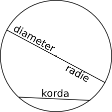
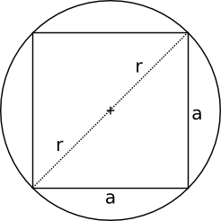
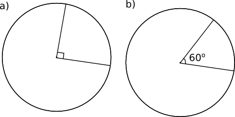
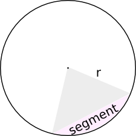
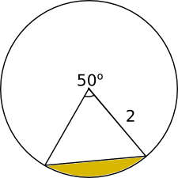
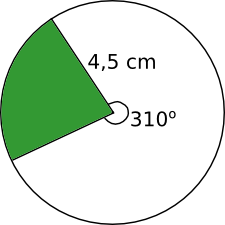

10. Cirkeln
Diskutera parvis. Vad är följande delar i en cirkel
- mittpunkt
- radie
- diameter
- korda
Lösning
Radie är avståndet från mittpunkten till omkretsen. Diametern är avståndet från kant till kant genom mittpunkten i cirkeln. Kordan är en sträcka från kant till kant i cirkeln.

Omkretsen, periferin, för en cirkel är \( p=\pi d = 2\pi r \).

Värdet för \( \pi \) är alltså förhållandet mellan omkretsen och diametern. Eftersom alla cirklar är sinsemellan likformiga får vi alltid samma värde på \( \pi \). Här kan du läsa mera om \( \pi \).
Arean för en cirkel är \( A=\pi r^2 \).
Exempel 1 En cirkels omkrets är 15,0 cm. Bestäm arean av cirkeln.
Lösning
Omkretsten, periferin, får vi via \( p=2\pi r \) så har vi att
\( \begin{array}{rcll} 15 & = & 2\pi r & \mid /(2\pi)\\ r & = & \dfrac{15}{2\pi}\\ & = & 2,38\ldots \text{cm}\\ \end{array} \)
Då är arean \( A=\pi r^2 = \pi (2,38\ldots)^2 =17,90\ldots \) cm2. Alltså 17,9 cm2.
Exempel 2 En kvadrat omskrivs av en cirkel. Hur många procent utgör kvadratens
- omkrets och
- area
av cirkelns?
Lösning
Figuren ger oss att

\( \begin{array}{rl} (2r)^2 = & a^2+a^2 \\ 4r^2 = & 2a^2 \\ 2r^2 = & a^2 \mid \sqrt{\quad}\\ r\sqrt{2} = & a \\ \end{array} \)
Svaren är:
\( \begin{array}{ll} a. & \dfrac{O_{\textrm{kvadrat}}}{O_{\textrm{cikel}}} = \dfrac{4a}{2\pi r} = \dfrac{2a}{\pi r} = \dfrac{2(r\sqrt{2})}{\pi r} = \dfrac{2\sqrt{2}}{\pi} \approx 0,90 \\ \\ b. & \dfrac{A_{\textrm{kvadrat}}}{A_{\textrm{cirkel}}} = \dfrac{a^2}{\pi r^2} = \dfrac{2r^2}{\pi r^2} = \dfrac{2}{\pi} \approx 0,64 \\ \end{array} \)
Hur stor del av cirkelns omkrets och area utgör följande sektorer?

Den vinkel som är i mittpunkten kallas för mittpunktsvinkel. Området som bildas av mittpunktsvinkeln och två radier kallas för sektor.
Området i en cirkel som begränsas av en korda kallas för segment.

Bågländgens förhållande till omkretsen är direkt proportionellt med storleken på mittpunktsvinkeln till en full vinkel. Det kan vi skriva matematiskt som \( \dfrac{b}{p}=\dfrac{\alpha}{360^{\circ}} \).
Då vi ersätter \( p=2\pi r \) och löser ut \( b \) från ekvationen ovan får vi att \( b=\dfrac{\alpha}{360^{\circ}}\cdot 2\pi r \).

För arean av en sektor gäller motsvarande. \( \dfrac{A_s}{A}=\dfrac{\alpha}{360^{\circ}} \). Då vi ersätter \( A=\pi r^2 \) och löser ut \( A_s \) får vi att \( A_s=\dfrac{\alpha}{360^{\circ}}\cdot \pi r^2 \).

Exempel 3 Bestäm storleken av cirkelbågen och arean av sektorn i figuren.

Lösning
Cirkelbågen \( b \) är \( b = \dfrac{\alpha}{360^{\circ}} \cdot 2\pi r = \dfrac{130^{\circ}}{360^{\circ}} \cdot 2 \pi 3= \dfrac{13\pi}{6}\text{ l.e.} \)
Arean är \( A=\dfrac{\alpha}{360^{\circ}}\cdot \pi r^2 = \dfrac{130^{\circ}}{360^{\circ}}\cdot \pi 3^2 = \dfrac{13\pi}{4}\text{ a.e.} \)
Exempel 4 Bestäm arean av segmentet i figuren.

Lösning
Arean för segmentet får vi genom att ta bort arean för triangel från arean för sektorn.
\( \begin{array}{rl} A = & A_{\textrm{sektor}} -A_{\textrm{triangel}} \\ = & \dfrac{\alpha}{360^{\circ}} \cdot \pi r^2 - \dfrac{1}{2}ab\sin\alpha \\ \\ = & \dfrac{50^{\circ}}{360^{\circ}} \cdot \pi 2^2 - \dfrac{1}{2} \cdot 2 \cdot 2 \sin50^{\circ} \\ \\ = & 0,2132\ldots \approx 0,21 \textrm{ a.e.} \end{array} \)
Uppgifter
- Runt en cirkelformad fontän lägger man stenbeläggning så att stenbeläggningen är 1 m bred. Bestäm arean av stenbeläggningen då fontänen har en radie om 3 m. Svara med en tiondel kvadratmeters noggrannhet.
Arean av stenbeläggningen är \( \pi (3+1)^2 - \pi 3^2 = 7\pi \approx 21,99 \) m2.
Alltså 22,0 m2
Bestäm arean av idrottsplanen som begränsas av löpbanorna nedan.

Bredden för idrottsplanen är diametern för cirkeln, \( d=\dfrac{2\cdot 100}{\pi} = 63,66 \) m. Radien är 31,83 m.
Arean är \( A_{\text{cirkel}}+A_{\text{rektangel}} = \pi 31,83^2 + 63,66 \cdot 100 = 9548,9 \) m2.
Bestäm arean av den gröna sektorn och längden av sektorns cirkelbåge i figuren nedan. Svara med en tiondels noggrannhet.

Sektorns area är
\( A=\dfrac{\alpha}{360^{\circ}}\pi r^2 = \dfrac{50^{\circ}}{360^{\circ}}\pi 4,5^2 = 8,836 \) cm2.
Längden av cirkelbågen är
\( b=\dfrac{\alpha}{360^{\circ}}2\pi r=\dfrac{50^{\circ}}{360^{\circ}}2\pi 4,5 = 3,927 \) cm.
- Bestäm radien för den cirkel vars omkrets har samma värde som arean.
Vi har omkretsen \( p=2\pi r \) och arean \( A=\pi r^2 \).
Dessa skall ha samma värde, alltså
\( \begin{array}{rcll} p & = & A \\ 2\pi r & = & \pi r^2 & \mid /\pi \\ 2r & = & r^2 \\ r^2 -2r & = & 0 \\ r(r-2) & = & 0\\ \end{array} \)
Alltså \( r=0 \) och \( r-2=0 \Leftrightarrow r=2 \).
Alltså cirkeln vars radie är 2.
- En cirkel inskrivs i en kvadrat. Hur många procent utgör cirkelns area av kvadratens?
Då vi låter kvadratens sida ha längden \( 2a \) är cirkelns radie \( a \).
Förhållandet mellan radierna är \( \dfrac{A_{\text{cirkel}}}{A_{\text{kvadrat}}} = \dfrac{\pi a^2}{(2a)^2} = \dfrac{\pi a^2}{4a^2} = \dfrac{\pi}{4} = 0,7853\ldots \).
Alltså 78,5 %.
- Hur många procent utgör det färgade området av kvadratens area?

Vi betecknar radien och kvadratens sida med \( a \).
Förhållandet är \( \dfrac{A_{\text{cirkelsektor}}}{A_{\text{kvadrat}}} = \dfrac{\dfrac{1}{4}\pi a^2}{a^2}= \dfrac{\pi}{4} = 0,7853\ldots \).
Alltså 78,5 %.

Vi betecknar kvadratens sida och cirkelns radie med \( a \).
Från förra uppgiften fick vi att det färgade området har arean \( \dfrac{1}{4}\pi a^2 \). Hälften av det färgade området får vi genom \( \dfrac{1}{4}\pi a^2-\dfrac{1}{2}a^2 \) och det hela färgade området är \( 2(\dfrac{1}{4}\pi a^2-\dfrac{1}{2}a^2) \).
Förhållandet är \( \dfrac{2(\dfrac{1}{4}\pi a^2-\dfrac{1}{2}a^2)}{a^2} =\dfrac{\dfrac{1}{2}\pi a^2 - a^2}{a^2} = \dfrac{a^2(\dfrac{1}{2}\pi -1)}{a^2} = \dfrac{\pi}{2}-1 \approx 0,5707\ldots \).
Alltså 57,1 %.
- En mittpunktsvinkel är 120o och avståndet mellan ändpunkterna för bågcirkeln är \( 2\sqrt{3} \). Bestäm längden av bågcirkeln.
Cirkelns radie får vi genom \( \sin 60^{\circ} = \dfrac{\dfrac{2\sqrt{3}}{2}}{r} \), \( r=2 \).
Längden av bågcirkeln är \( \dfrac{\alpha}{360^{\circ}}2\pi r = \dfrac{120^{\circ}}{360^{\circ}}2\pi 2 = \dfrac{4\pi}{3} \).
- Höjden på ett segment för en cirkel är en fjärdedel av cirkelns diameter. Bestäm exakt och ange svaret med en tiondels noggrannhet hur många procent segmentets area utgör av cirkelns area.
Vi betecknar cirkelns radie med \( 2a \). Då är höjden för triangeln som bildas \( a \) och segmentets höjd är \( a \).
Vinkeln för halva sektorn är \( \cos \alpha =\dfrac{a}{2a} \Leftrightarrow \alpha = 60^{\circ} \).
Arean för segmentet är \( A_{\text{segment}}=A_{\text{sektor}}-A_{\text{triangel}} = \dfrac{2\cdot60^{\circ}}{360^{\circ}}\pi(2a)^2-\dfrac{1}{2}(2a)^2\sin 120^{\circ} = \dfrac{4\pi a^2}{3} - \dfrac{4a^2\sqrt{3}}{4} \).
Förhållandet är \( \dfrac{\dfrac{4\pi a^2}{3} - a^2\sqrt{3}}{\pi(2a)^2} =\dfrac{a^2(\dfrac{4\pi}{3} - \sqrt{3})}{4\pi a^2} = \dfrac{\dfrac{4\pi}{3} - \sqrt{3}}{4\pi} \approx 0,1955\ldots \).
Alltså 19,6 %.